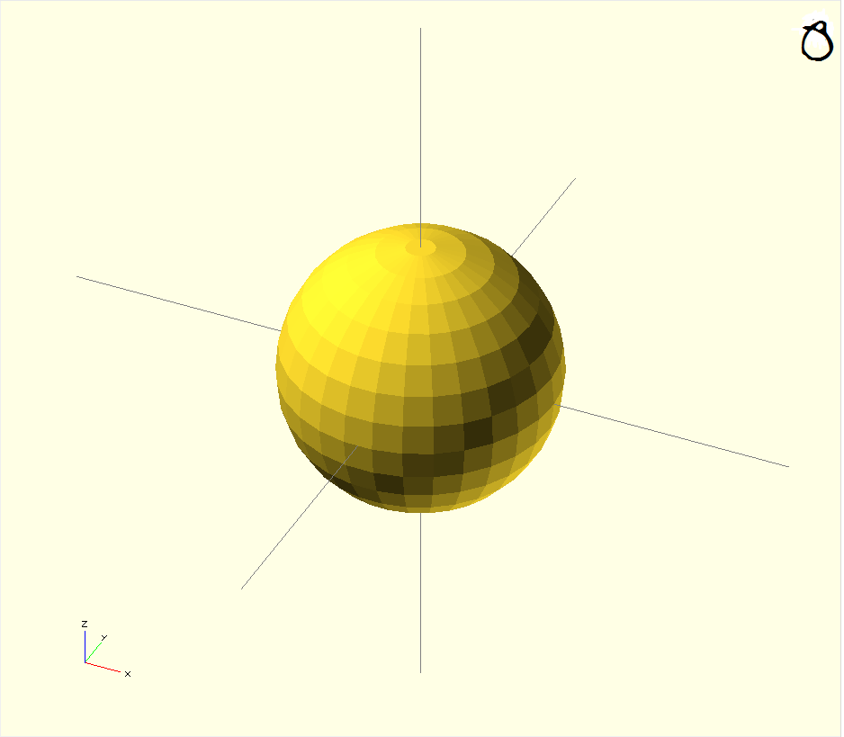
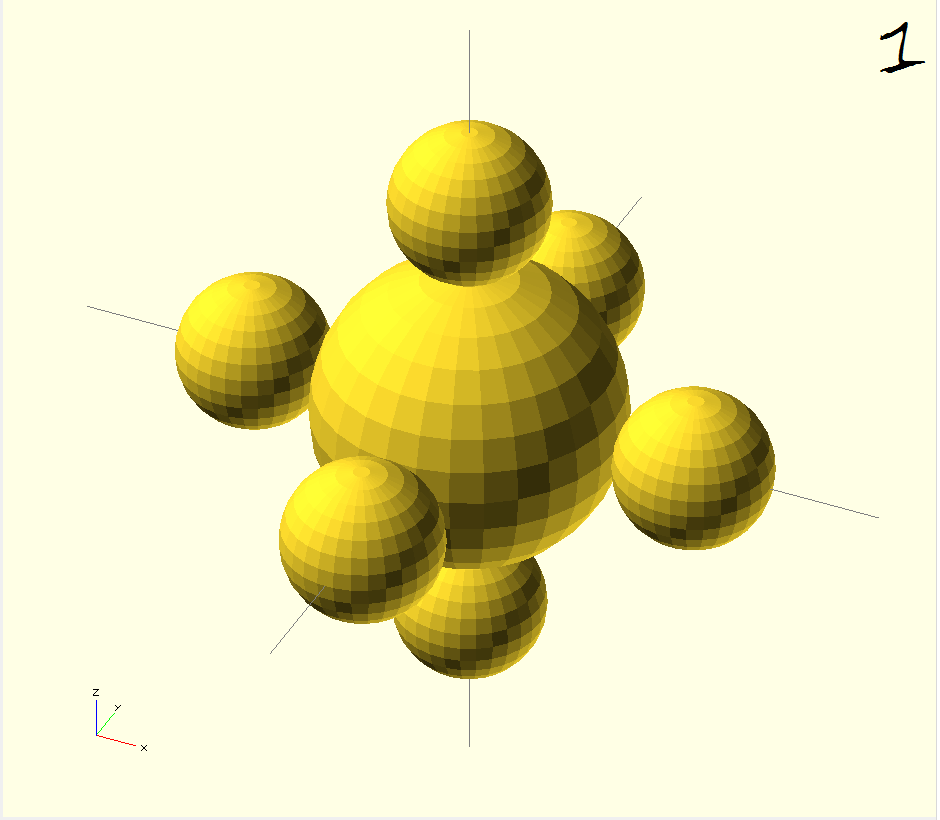
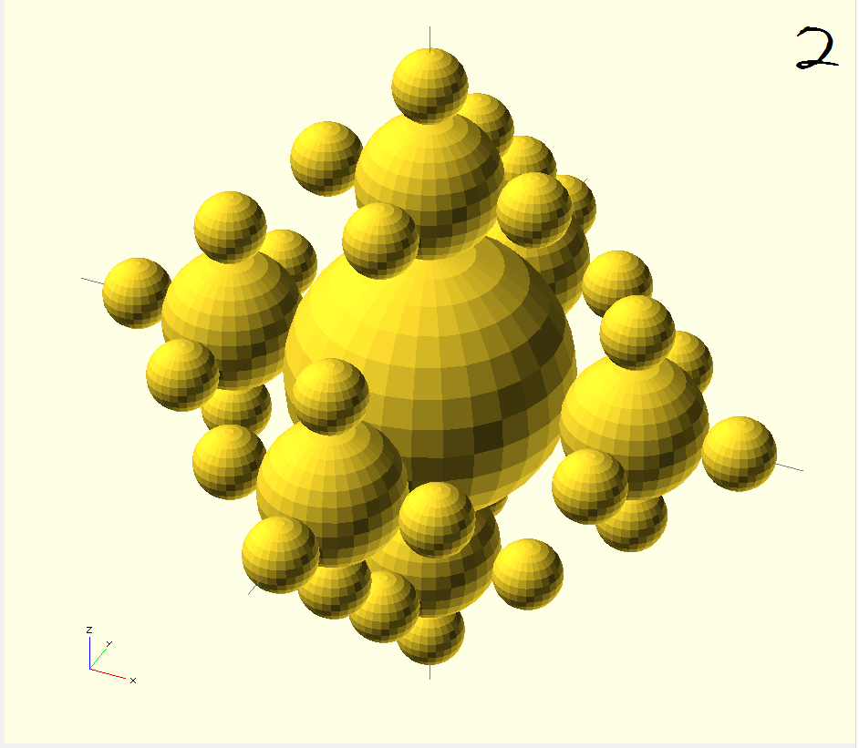
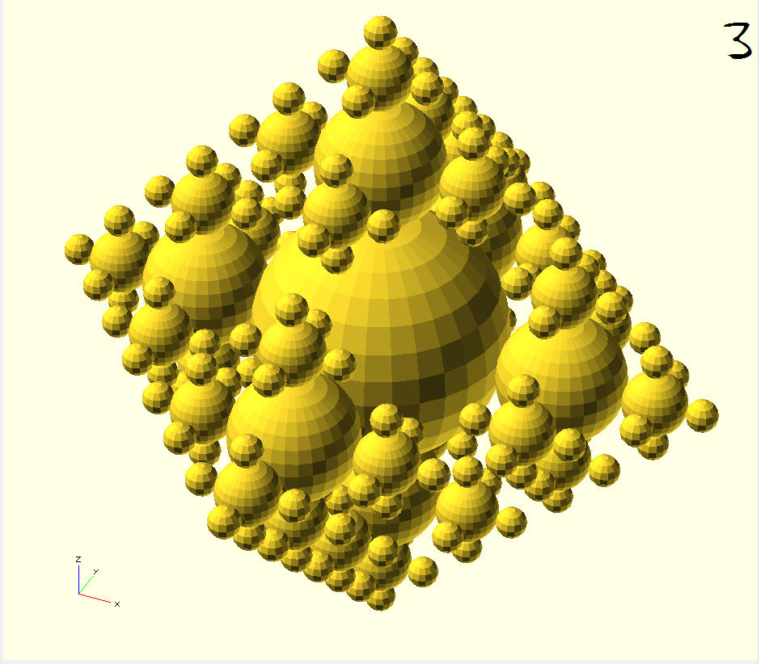
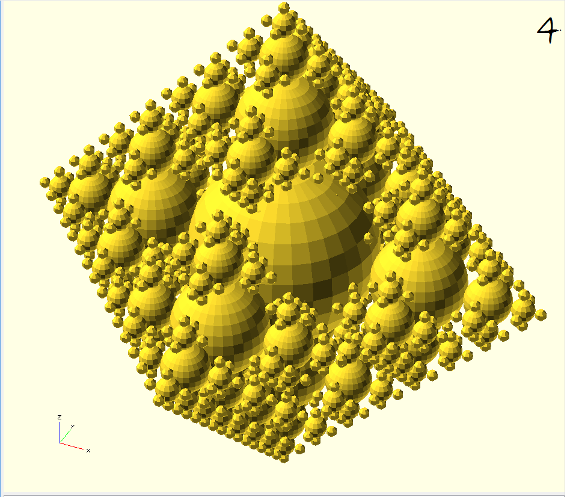

Our fractal is named Trypopopopopophobia it starts with a sphere with a certain radius r where \(r \in \mathbb{R}\).
  Basically, in each iteration, we add two spheres on each 3D axis (X, Y and Z) that is slightly touching the sphere of the previous iteration. The length of the radius of every sphere of the new iteration is half the length of the sphere of the previous one.
We do the same process at every iteration but the only difference that change between the first iteration and all the others is that we ‘‘can’t‘‘ add 6 spheres (2 on each 3D axis) because there is already a sphere of the previous iteration on one of the axis. In short, except the first iteration where we add 6 spheres, we always center the 3d axis in the center of each sphere produced by the iteration and add 5 spheres on the 3D axis where it is possible.   
To conclude, our rule is to add 5 spheres based on the three-dimensional cartesian plane of each new spheres created by every iteration (except the first iteration with 6 spheres) and the sphere’s radius of each iteration is half the length of the radius of the sphere of the previous step.